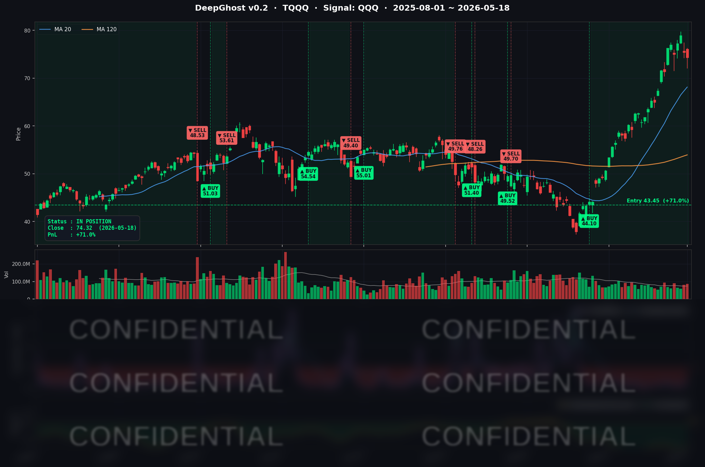

지난주 US10Y (10년물) 패닉셀이 있었습니다. 보통 같았으면 주식시장이 발작했을 것이지만, 장 막판 트럼프가 나와서 방어를 해주었습니다. 지금은 불안한 횡보장입니다만, NVIDIA 실적 호조 발표 후 채권 금리가 안정되면 다시 한번 상승 탄력을 받을 수도 있겠습니다. 하지만 이 모든 것은 예측입니다.
주식은 "예측"이 아닌 "대응"입니다. 본인의 매매 Rule이 없다면 Ghost.AI 지침을 따르세요.
📊 오늘의 매매 신호
| 항목 | 내용 |
|---|---|
| 오늘 할 일 | ✅ 아무것도 안 해도 됩니다 |
| 포지션 상태 | 📈 TQQQ 보유 중 (IN POSITION) |
| 매수 진입일 | 2026-04-07 (41일째) |
| 진입가 → 현재가 | $43.45 → $74.32 |
| 현재 포지션 수익 | +71.05% |
TQQQ 시그널 — IN POSITION
현재 상태: 매수 포지션 유지 중 | 누적 수익률 +71.05%

시그널이 말하는 것
오늘 나스닥은 -0.51% 하락했지만, AI 모델이 TQQQ에 대해 보는 신호는 여전히 강한 매수 구간에 머물러 있습니다. 가격은 빠졌지만 모델의 매수 확신은 손상되지 않았습니다.
이게 어떻게 가능할까요. 모델은 하루의 등락이 아니라 "추세 코어의 구조가 무너졌는가"를 봅니다. 오늘 시장 약세는 국채금리(10년물 4.63%, 1년래 최고)와 엔비디아 어닝(5/20) 대기 심리에 따른 외부 충격으로, 빅테크 내부의 매수 구조는 손상되지 않았다는 게 모델의 판단입니다.
청산 신호까지의 여유 구간은 여전히 충분합니다. 시장이 변동성 구간에 진입했음에도 모델은 추세 종료로 해석하지 않고 있습니다. 다만 5/20 엔비디아 실적이 이번 주 전체 포지션의 방향을 결정할 분기점입니다.
오늘 미국 마감 — 주요 이슈 서머리
지수 마감
| 지수 | 종가 | 등락률 |
|---|---|---|
| S&P 500 | 7,403.05 | -0.07% |
| 나스닥 종합 | 26,090.73 | -0.51% |
| 다우존스 | 49,686.12 | +0.32% |
다우는 강보합, 나스닥은 약세인 혼조 마감이었습니다. 에너지·방산·은행이 다우를 떠받쳤고, 금리發 멀티플 부담을 받는 기술주 비중이 큰 나스닥은 하락했습니다.
국채 금리 & 연준
| 국채 만기 | 수익률 | 전일 대비 |
|---|---|---|
| 2년물 | 약 4.32% | +3bp |
| 10년물 | 4.63% | +4bp |
| 30년물 | 약 5.05% | +5bp |
10년물이 다시 1년래 최고 수준(4.63%)에 진입했습니다. 단기물보다 장기물이 더 많이 오르는 "베어 스티프닝" 형태로, 채권시장이 장기 인플레이션 프리미엄을 더 높게 가격에 반영하고 있다는 의미입니다. 듀레이션이 긴 빅테크·소프트웨어 멀티플에는 직접적인 압박이며, 반대로 은행·에너지에는 우호적입니다.
연준 위원 발언 톤도 매파적이었습니다. Cheryl Venable 애틀랜타 임시 총재는 에너지發 인플레이션이 통화정책 완화를 어렵게 한다는 신중론을, Austan Goolsbee 시카고 총재는 인하 대신 현 수준 동결 유지 선호를 시사했습니다. 시장은 연내 인하 가능성을 사실상 배제했고, 일부 트레이더는 연말~2027년 3월 금리 인상까지 베팅하고 있습니다.
핵심 이슈
-
국채금리 1년래 고점 재진입 → 빅테크 멀티플 압박: 10년물 4.63%, 30년물 5.05%. 인플레이션과 美-이란 분쟁의 에너지 충격이 장기금리 프리미엄을 끌어올렸습니다. SPY는 보합 수준에서 방어됐지만 기술주 비중이 큰 나스닥은 -0.51%로 빠졌습니다.
-
엔비디아 Q1 FY27 어닝 임박 (5/20 마감 후) → 시장 관망: 컨센서스 매출 약 $78.0~78.75B, 비-GAAP EPS $1.76~1.77, 데이터센터 부문 $72.85B 추정. 18일 NVDA 종가는 $222 부근에서 마감, 옵션 변동성이 크게 부풀고 있습니다. 이번 주 시장 전체의 방향성을 좌우할 단일 이벤트입니다.
-
美-이란 분쟁 지속 + 오일·달러 동시 강세: WTI는 장중 $108 돌파 후 임시 제재 완화 보도에 $105 부근으로 후퇴(여전히 절대 레벨이 높음), Brent는 $111 → $102. 호르무즈 해협은 여전히 봉쇄 중이며 UAE 원전 시설 공격 보도까지 더해지며 지정학 프리미엄이 유지되고 있습니다. DXY는 99.39로 약 1개월래 최고, 안전자산 선호 흐름.
매크로 체크
| 지표 | 수치 | 해석 |
|---|---|---|
| NAHB 주택시장지수 (5월) | 37 | 25개월 연속 50 미만이나 전월 34→37 개선 |
| WTI 유가 | 약 $105 | 장중 $108 돌파 후 후퇴, 여전히 높은 레벨 |
| DXY (달러지수) | 99.39 | 약 1개월래 최고 — 안전자산 선호 |
| VIX | 약 17~18 | 정상 변동성 구간, 단 NVDA 어닝發 단기 IV 확장 |
| 공포탐욕 지수 | 63 (탐욕) | 5월 초 70+ 대비 후퇴, 중립으로 수렴 중 |
커버리지 종목 동향
| 종목 | 종가 | 등락 | 당일 주요 뉴스 |
|---|---|---|---|
| NVDA | $222.32 | -1.33% | 5/20 어닝 대기, 장중 $218~$230 변동성 확대 |
| AAPL | $297.84 | -0.80% | $300 핵심 피봇 부근 방어, 빅테크 중 상대적 견조 |
| MSFT | $423.54 | +0.38% | $425 저항 테스트, AI/Azure 모멘텀 유지 |
| GOOGL | $396.94 | +0.04% | $400 저항 직전 조정, AI 검색 모멘텀 유지 |
| AVGO | $420.71 | -1.05% | UBS, 목표가 $475 → $490 상향 (Buy, AI ASIC 수요) |
| INTC | $108.17 | -0.55% | Q1 서버 CPU 점유율 -370bp 손실 보도, Citi TP $95→$130 상향 |
| AMZN | $264.86 | +0.27% | 별다른 헤드라인 없음 |
| META | $611.21 | -0.49% | 약보합권 |
| NFLX | $89.65 | +3.02% | 별다른 헤드라인 없는 자체 모멘텀 상승 |
| TSLA | $409.99 | -2.90% | 하락폭 확대 |
| QCOM | $203.64 | +1.07% | 약보합권 반등 |
| SPY | $738.65 | -0.07% | 보합권 방어 |
| QQQ | $705.88 | -0.43% | 빅테크 비중에 따른 상대 약세 |
시장과 시그널 — 오늘의 인사이트
"조용한 날"이 아니라 "이미 절반 비운 날"
오늘 시장 톤은 표면적으로 조용했습니다. S&P500은 -0.07%, 다우는 +0.32%. 하지만 그 아래에는 10년물 1년래 고점, 엔비디아 어닝 D-2, 美-이란 긴장이라는 3중 리스크가 동시에 활성화돼 있습니다.
Ghost.AI 모델은 이 변동성 구간을 어떻게 맞이했을까요. 13개 커버리지 종목 중 6개는 IN, 7개는 CASH입니다. 정확히 절반 분할입니다.
IN으로 남은 6종목(AAPL, AMZN, GOOGL, NVDA, QQQ, SPY)은 모두 4월 초에 진입한 추세 코어입니다. 평균 보유 수익은 약 +17.7%, GOOGL +31%, AMZN +25%, QQQ +20% 등 두 자릿수 쿠션을 이미 깔고 있습니다. 반대로 CASH인 7종목은 사이클·반도체 후행주(INTC, QCOM, AVGO), 변동성 종목(TSLA, NFLX), 횡보 빅테크(MSFT, META)입니다. 모델은 "추세 우월 종목은 잡고, 멀티플·이벤트 리스크 종목은 비워두는" 선별을 이미 끝낸 상태입니다.
시장이 "혼조"라고 부르는 날 Ghost.AI는 절반의 방어진을 수립했습니다.
가격과 시그널이 반대로 움직이는 사례
오늘은 가격과 모델 신호가 정반대로 움직인 흥미로운 사례가 있었습니다.
인덱스(QQQ/SPY): 가격은 빠졌지만 모델 신호는 여전히 깊은 매수 영역에 머물러 있습니다. 이는 외부 충격(금리·유가)이 표층 가격을 끌어내렸을 뿐, 빅테크 내부의 매수 구조는 무너지지 않았다는 의미입니다. 모델은 이를 "건강한 흡수"로 읽고 있습니다.
엔비디아 어닝 D-2 — 이번 주의 진짜 시험대
5월 20일(수) 마감 후 엔비디아 Q1 FY27 어닝이 발표됩니다. 컨센서스 매출은 $78.0~78.75B, 데이터센터 부문 $72.85B로 추정됩니다. 핵심 변수는 Blackwell 가이던스입니다.
NVDA는 5/11에 신규 진입한 보유 7일째 종목입니다. 수익은 +1.73%로 얇은 편이지만, 모델은 여전히 매수/홀드 구간을 유지하고 있습니다. 다만 어제까지의 강했던 매수 압력은 다소 약해져 중립권에 근접한 상태입니다. 어닝(5/20) 결과가 (a) 매수 재가속 또는 (b) 청산 전환의 방향을 결정할 분기점이 됩니다.
어닝 결과가 컨센서스를 크게 하회하지 않는 한 보유는 지속될 가능성이 높습니다. 다만 미스 시에는 변동성 점프와 동반된 청산 신호가 발생할 수 있고, 그 영향은 NVDA 하나로 끝나지 않고 인덱스(QQQ/SPY)와 신규 진입 대기 중인 AVGO까지 연쇄 변동성으로 전이될 수 있습니다.
내일을 위한 체크리스트
- [ ] 5월 19일 (화) 시장 톤 — 엔비디아 어닝 직전 막판 포지셔닝 변화 관찰
- [ ] 10년물 4.63% 추가 상승 여부 — 4.75~5.0% 진입 시 멀티플 구조 재평가 단계
- [ ] WTI 유가 $105~$108 변동성 — 美-이란 협상/충돌 헤드라인 직결
- [ ] NFLX 모델 신호 추가 흐름 — 매수 트리거 조건 충족 여부 (현재 1일차)
- [ ] AVGO·MSFT 변동성 지표 변화 — 엔비디아 어닝 전후 임계 돌파 가능성
- [ ] 5월 20일 (수) 엔비디아 FY27 Q1 어닝 — 매출·Blackwell 가이던스·데이터센터 코멘트 확인
- [ ] 5월 21일 (목) 4/29 FOMC 의사록 — 매파 위원 수 확인
Ghost.AI — Quantitative AI Investment
Model: DeepGhost v0.2 | Transformer-Based Deep Learning
Coverage: 13 tickers | Updated every trading day after US market close
⚠️ 본 자료는 정보 제공 목적으로만 작성되었으며 투자 권유가 아닙니다. 모든 투자의 책임은 투자자 본인에게 있습니다. 과거 성과가 미래 수익을 보장하지 않습니다.